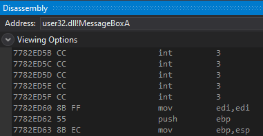
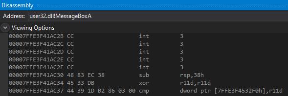
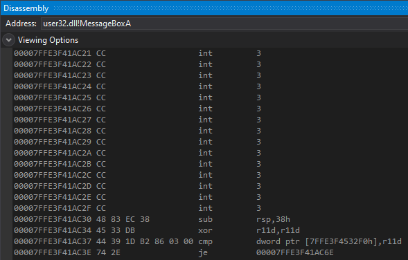
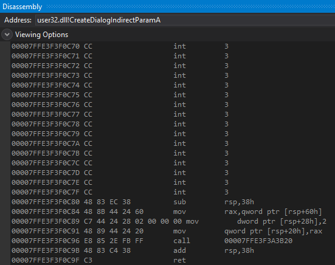
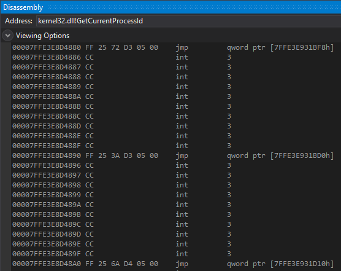

# x64 Hotpatch Hooking
The goal of x64 hotpatch hooking is to use the free bytes of space before a function.
•
https://www.codeproject.com/Articles/1043089/HotPatching-VERY-Deep-Inside?msg=5164819#xx5164819xx•
https://github.com/WindowsNT/hotpatch/blob/acb4353a4b202a39294df114f47fb7b49784f2fe/hotpatch.h#L1502•
https://docs.microsoft.com/en-gb/archive/blogs/freik/what-does-hot-patchability-mean-and-what-is-it-for## The Problem with Hotpatching on x64
I have no idea why things are different on x64.
### There isn't a 2 byte NOP - mov edi,edi - anymore
On x86, every function starts with a 2 byte NOP - mov edi, edi.
This is so it can be replaced with a 2 byte EB F9 to jump backwards into hotpatch space.
Here's MessageBoxA on x86.
On x64, this doesn't exist anymore.
The function prologue immediately starts at the function's address.
Here's MessageBoxA on x64, which starts at address
0x00007FFE3F41AC30Because of this, it means you can't safely overwrite the start of the function anymore.
The 2 bytes that you write to address
0x00007FFE3F41AC30 will overwrite the function prologue and break the function.
To solve this, you need to copy those bytes you overwrote -
sub rsp,38h - to trampoline space.
That way, when you want to execute the original MessageBoxA, you can execute the prologue bytes in your trampoline and then jump to the original function.
### The size of hotpatch space before the function varies (and there's lots of function variety)
On x86, there reliably existed hotpatch space before the function.
Here's MessageBoxA on x86 with (at minimum) 5 bytes of space before the function.
On x64, the amount of hotpatch space seems to vary wildly.
Here's MessageBoxA on x64 with 15 bytes of hotpatch space before it.
Here's CreateDialogIndirectParamA on x64 with 16 bytes of hotpatch space before it.
Here is GetCurrentProcessId from kernel32 on x64.
It seems to be in a weird-looking jump table,
and there's 10 bytes of space between each entry in the table.
As a result, because of the varying lengths in hotpatch size,
there's catch-all solution to this.
You'll have to use a different method to reach your trampoline for each hook
depending on how many hotpatch bytes you have to work with.
14 bytes?
Use an EB F0 to jump 14 bytes back and use an FF 25 00 00 00 00 <trampoline address>
to reach your tramopoline.
For GetCurrentProcessId?
Try to find memory within a 2gb range and overwrite the FF 25 with the 32bit relative address of the memory in 2gb range. At that memory is a 64bit address, which is the address of your trampoline.
The method for hotpatch hooking on x64 will vary for each function.
## The intended x64 hotpatch method? Uses 6 bytes of hotpatch space & 2 bytes of the original function
This method is documented here:
x64 - Hotpatch Hooking - EB F8
Apparently Microsoft says that you only need 6 bytes of free space on x64 for hotpatching.
(according to here at the x64 Function Patching heading, can't find their source for this:)
https://www.codeproject.com/Articles/1043089/HotPatching-VERY-Deep-Inside?msg=5164819#xx5164819xxThere's a good explanation in the comments about how to do this:
https://www.codeproject.com/Articles/1043089/HotPatching-VERY-Deep-Inside?msg=5164819#xx5164819xxAnd this article explains the concept too:
https://docs.microsoft.com/en-gb/archive/blogs/freik/what-does-hot-patchability-mean-and-what-is-it-forHowever,
this technique relies on being able to find free memory within a 2gb range of the function you're patching.
(because FF 25 requries a 32bit value)
You:
• find free memory within a 2gb range of your target function
• write the 64bit address of your hook code there
• overwrite the first 6 bytes of hotpatch space with FF 25 <addr of memory in 2gb range>
• overwrite the first 2 bytes of the target function with jmp $-6 (jump 6 bytes back)
Now whenever the target function is called it will:
• jump 6 bytes back (into the hotpatch space)
• run FF 25 and read the 64bit address from the free memory
• jump to the 64bit address, which will be your hook code